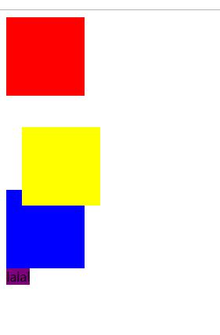

原文连接:https://www.cnblogs.com/ruigege0000/p/12057696.html
一、定位流
1.分类
（1）相对定位；
（2）绝对定位
（3）固定定位
（4）静态定位
2.什么相对定位
相对定位就是相对于自己以前在标准流中的位置来移动。
例子：
<style>
div{
width:100px;
height:100px;
}
.box1{
background-color: red;
}
.box2{
background-color: yellow;
}
.box3{
background-color: blue;
}
</style>
</head>
<body>
<div class="box1"></div>
<div class="box2"></div>
<div class="box3"></div>
</body>
现在修改box2的属性
.box2{
background-color: yellow;
position:relative;/*相对流不会脱离标准流*/
top:20px;
left:20px;
}3.注意：
（1）相对流不会脱离标准流
（2）在相对定位中同一个方向上的定位属性只能使用一个
（3）由于相对定位是不脱离标准流的，所以在相对定位中是区分块级元素/行内元素/行内块级元素
（4）由于相对定位是不脱离标准流的，并且相对定位的元素会占用标准流中的位置，所以当给相对定位的元素设置margin/padding等属性时会影响到标准流的布局。（也就是设置了margin/padding属性的时候，会把原来标准流中的位置进行相应调整，而相对位置会等标准流设置好了再进行生效）
（5）position:relative;经常忘记设置。
.box2{
background-color: yellow;
position:relative;/*相对流不会脱离标准流*/
top:20px;
left:20px;
margin-top: 20px;
}
4.相对定位的应用场景
（1）用于对元素进行微调，比如：各种标签一起使用的时候，由于标签的差异，需要进行对齐，使用相对定位会更加简便。
（2）配合后面学习的绝对定位进行使用
二、绝对定位
1.什么是绝对定位
绝对定位就是相对于body来定位的。
先来一个基础的代码
<!DOCTYPE html>
<html lang="en">
<head>
<meta charset="UTF-8">
<title>D150_AbsolutePositoning</title>
<style>
div{
width:100px;
height:100px;
}
.box1{
background-color: red;
}
.box2{
background-color: yellow;
/*position:absolute;*/
}
.box3{
background-color: blue;
}
span{
width:100px;
height:100px;
background-color: purple;
}
</style>
</head>
<body>
<div class="box1"></div>
<div class="box2"></div>
<div class="box3"></div>
<span>我是行内块级元素在绝对定位中的作用的</span>
</body>
</html>
2.绝对定位注意点
（1）绝对定位的元素是脱离标准流的
.box2{
background-color: yellow;
position:absolute;
}（2）绝对定位的元素是不区分块级元素/行内元素/行内块级元素的。
span{
width:100px;
height:100px;
background-color: purple;
position:absolute;
}
（3）这个绝对定位优点类似于浮动流
.box2{
background-color: yellow;
position:absolute;
right:0px;
bottom:0px;三、源码：
D148_RelativePositioning.html
D150_AbsolutePositoning.html
地址:
https://github.com/ruigege66/HTML_learning/blob/master/D148_RelativePositioning.html
https://github.com/ruigege66/HTML_learning/blob/master/D150_AbsolutePositoning.html
2.CSDN：https://blog.csdn.net/weixin_44630050
3.博客园：https://www.cnblogs.com/ruigege0000/
4.欢迎关注微信公众号：傅里叶变换，个人账号，仅用于技术交流，后台回复“礼包”获取Java大数据学习视频礼包